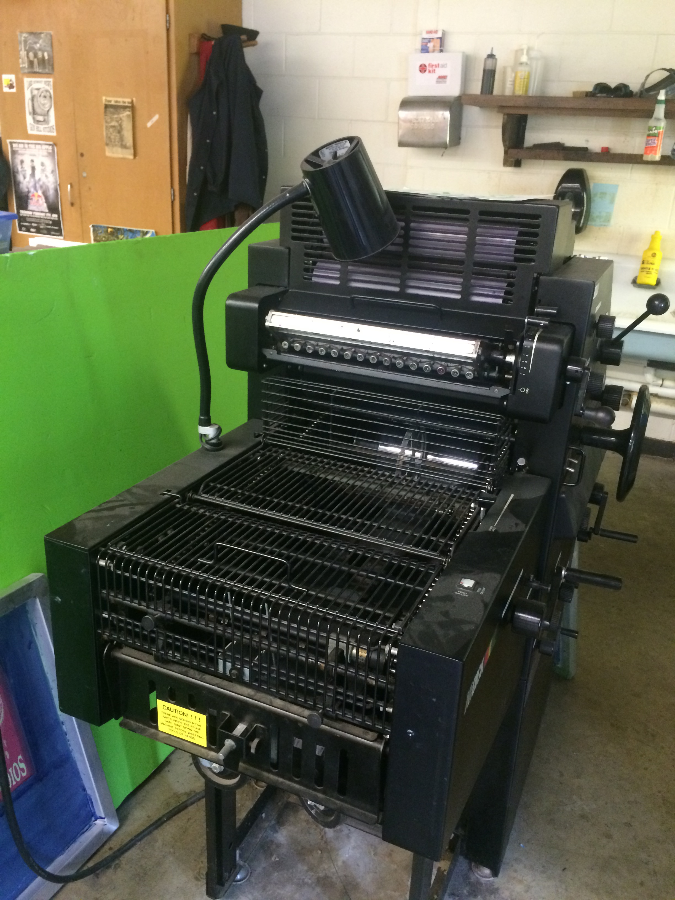
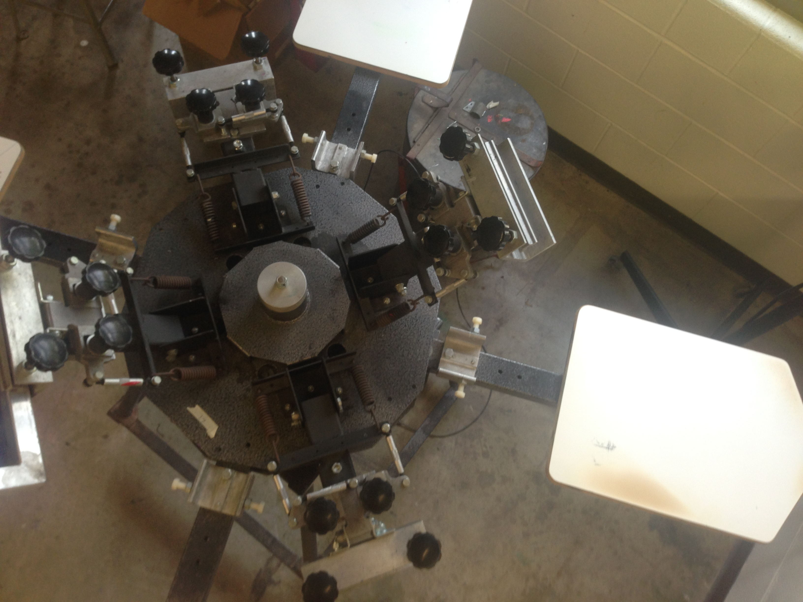
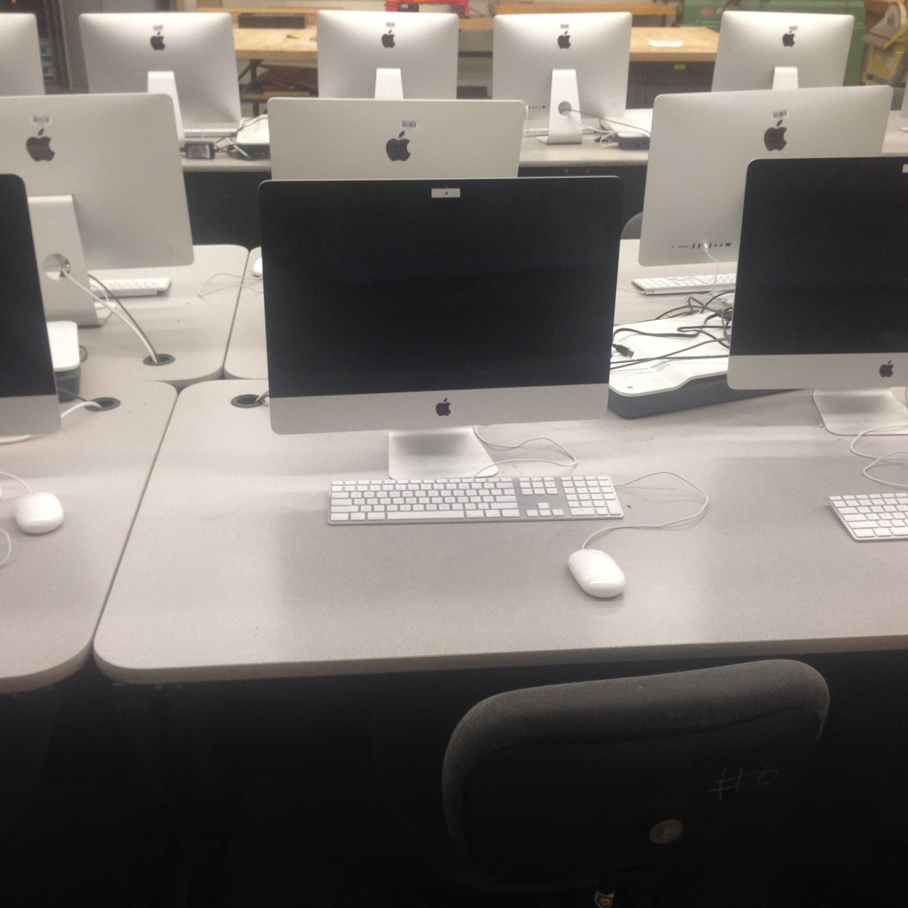
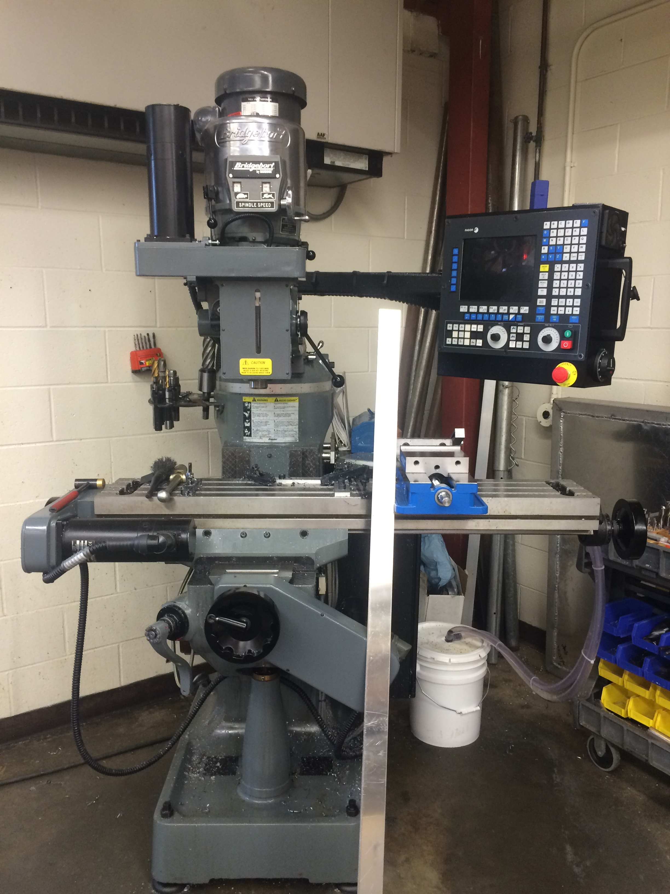
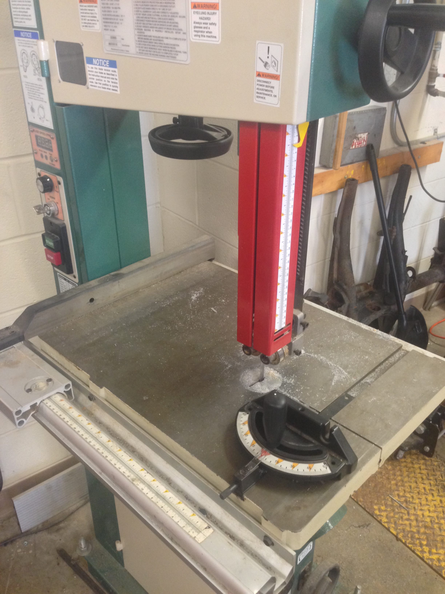

E1
E1 contains a “basically modern” auto shop. It features a four post lift that can raise most vehicles off the grounds, a sand blaster, a tire changer, and finally a set of computer workstations that provide computer-aided design capabilities for the students using the room.

E4
Ithaca High School’s print shop is located in E4, replete with several devices that would look more normal in a sci-fi movie.
It contains more than 20 computers that each have an array of helpful software, allowing students to design and print almost anything. The rooms is also used for teaching a range of technology classes, including Printing Technology, Graphic Communication, and Design and Drawing for Production. It is also used as the current meeting place of Ithaca High School’s chapter.

E11
A large woodshop that features drill presses, bandsaws, and both lathe and belt sanders fills E11. It also has a spread of advanced woodworking technology, such as a router and a CNC mill that allow students to make anything out of wood. To protect students from the clouds of sawdust made by these, a powerful ventilation system has been installed. Hidden from the noise that these power tools make, E11 also has workstations with Autodesk Inventor to help students with the designing process.
 
E16
The metal shop is found in E16. It displays many of the tools found in most tech rooms: a stock of hand tools, bandsaw, drill press, and a welding station. It also has rows of computers that students can use Autodesk Inventor to model objects that they will build. This room is used by Ithaca High School’s FIRST robotics chapter Code Red Robotics to make parts for the robots that they create.